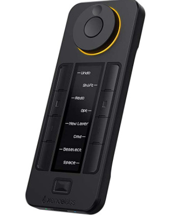

こんにちはシューです
キーボードを作るといったな？あれは嘘だ
そういうと語弊があるのでちゃんと説明しますね
やめる...というのも嘘ですね
計画変更といいますか、作るものを変更したいのです
理由としては、テンキーを作るとなると地味に部品が高い...
それにpcbを発注することもできないし、配線も大変だし...
やっぱり楽したいのです
テンキーはまたいつか挑戦したと思ってますので。いつか
テンキーボードから、片手デバイスに変更します
これならあまりボタンも多くないですし、よく使いますよね
片手デバイスなら数千円で買えちゃう時代ですが、自作キーボードがやりたいのです
目標はこちら
クイッキーズ ショートカット

ぶっちゃけ、これでよくね？って思ってる人、お静かに
まぁごもっともですがね
これを目標とする理由としては、私は普段アナログ、デジタル関係なく絵を描きます
そこでペンタブのショートカットだけですと、押しにくいですし少ないのです
もっと便利なショートカットを使いたい...ってことですね
モニターの部分は再現しませんが、クルクルのところは再現したいですね
いきなりの計画変更ですが、キーボードを作ることに変わりはないので問題ないですね
次の記事は来年移行になっちゃうかな？
まぁリアルも忙しいですし、なにより3Dプリンターを用意したいです
3Dプリンターさえあればもう勝ったも同然なので、誰か送ってください
ツイートする